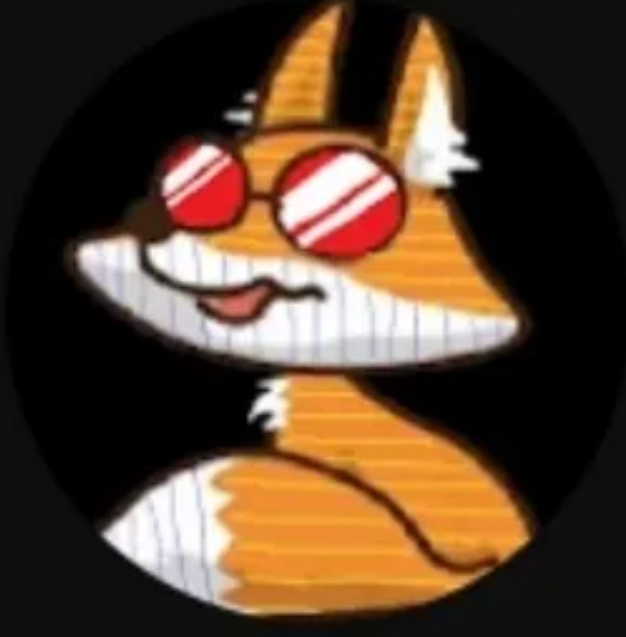

SPAIN · ORBITAL LIFT
SoeZ
SoeZ is a Spanish Guardian Tales player and an Orbital Lift expert. He helped me build the Orbital Lift section of Guardian Atlas.
Thank you, SoeZ, for sharing your knowledge and helping bring this part of the site to life.
Explore Orbital Lift →